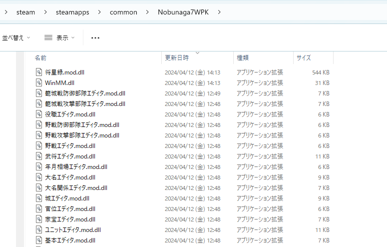

動作環境


- Windows 10 以上
(管理人の動作確認は Windows 11 のみ) - .NET Framework 4.8以上
(わざわざ Windows Update を止めていない限り、.NET Framework 4.8.1が入っているハズです)
以下の３つの機能を提供します。
このModは導入しただけではゲームはほぼ変化しません。
ご自身で「変化することの敷居を大幅に下げる」ための基盤になっています。
元のゲームデータを直接編集や置き換えすることなく、「OVERRIDE」フォルダ以下にゲームデータファイルを配置することで、
「該当ファイル」に関してはそれを優先して採用させることが出来ます。
現代的なModシステムを採用しているゲームにあるような「対応するフォルダ＆ファイル位置に配置すればそちらを優先」といった機能が実現されています。
実行中のゲームのパラメータを編集する機能です。
ちょうど信長の野望パワーアップキットのゲーム中の「編集」の機能だと思えばよいでしょう。
このエディタは実際にはツールとして使用する目的では提供されていません。
(ツールとして利用することも可能ではありますが、やや不便であろうと思います)
これらは次の項目となる「カスタム.mod」で「どのクラスがどのようなプロパティを使えるのか」、
を確認しやすくするために存在しています。
C#プログラムを使うことでメモリエディタだけでは不可能な「とあるタイミングで処理を施す」といったことや、
「特定の武将の特定のシーンだけメッセージを変更」する、
「条件を見て列伝を変更」する、
「ある条件を満たした時だけ顔グラ」を変更する、
など、様々なことを実現できます。


以下のような「download.bat」といったファイルを適当なフォルダに作成し、ダウンロードしてください。
curl経由となるため、ブロックされにくいハズです。
(作成したフォルダにn7mod.zipというファイル名でダウンロードされます)
ゲーム本体のファイルが上書きされたりはしません。
(ゲーム本体のファイル名とは被っていない)

Visual Studio 2022 C++ ランタイム
x86版をインストールしたことが無い方はインストールしてください。
お手持ちのOSが64bitか32bitかには関わりなく、x86版のインストールが必要です。
以上で終了です。